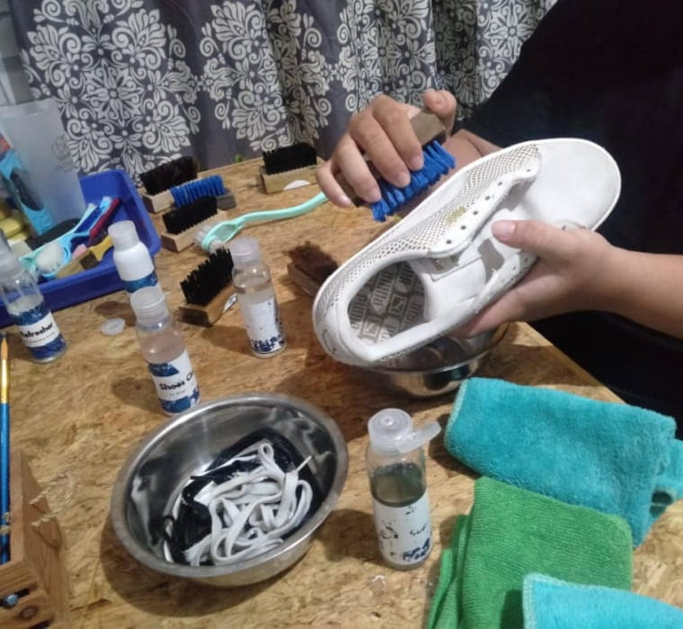
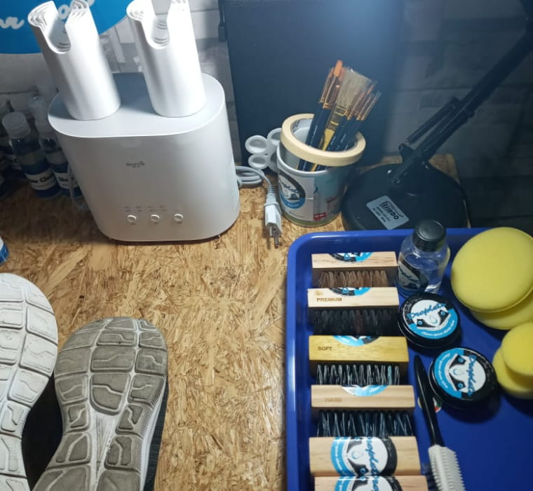
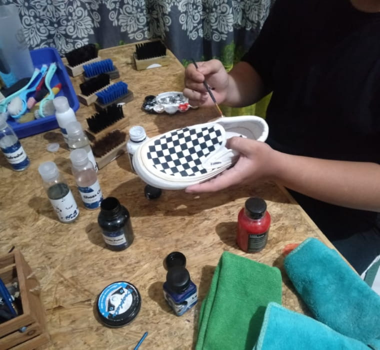

Layanan

Ada beberapa layanan yang kami tawarkan kepada anda, untuk membantu mengatasi permasalahan dengan sepatu anda. Berikut adalah jasa yang kami tawarkan kepada anda :

Cleaning
- Fast clean, membersihkan semua bagian luar sepatu termasuk tali dan outsole.
- Deep clean, membersihkan keseluruhan bagian dalam dan luar sepatu.
- Unyellowing, memutihkan midsole yang sudah menguning.
Extra Treatment
- Stain removal, membersihkan noda yang membekas dan sulit dibersihkan (lumpur, susu, kopi, dll.)
- Leather care, memberikan perawatan extra pada sepatu berbahan kulit (boots, pantoefl, dll.)


Repair
- Reglue, merekatkan kembali midsole/outsole yang telah renggang atau terlepas
- Stitch, menjahit midsole/outsole yang terlah renggang atau terlepas custom, kustom jahitan pada midsole ataupun upper dengan model sesuai permintaan